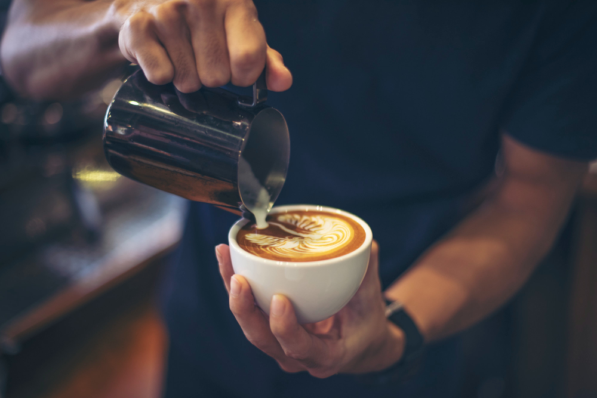
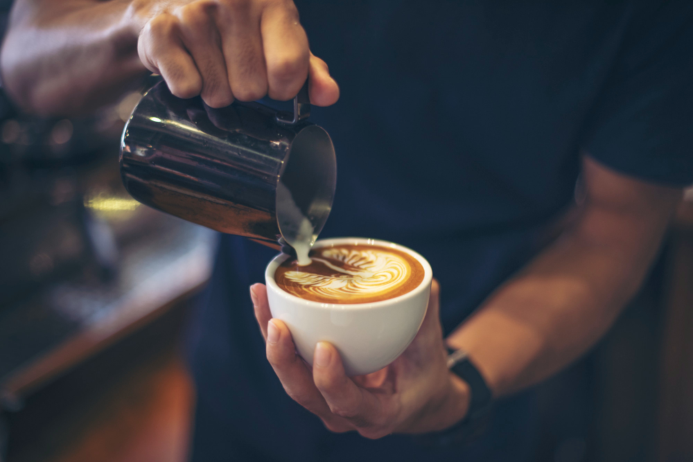

O NÁS
První kočičí kavárna v celém Hradci Králové.
Kavárna Cafe Purrfect, sídlící v centru Hradce Králové, poprvé otevřela dveře zákazníkům v roce 2016. Původně fungovala jako normální kavárna, avšak postupem let k nám zavítali naši malí zvířecí kamarádi a stali se její nezbytnou součástí.
Naši zaměstnanci se nestarají pouze o potřeby našich zákazníků, ale také o naše chlupaté společníky. Ti se obratem starají o Vaši zábavu.
Kdo si nepotrpí na zvířátka, nebo je z nějakého důvodu omrzí roztomilé tvářičky naší kočičí famílie, nabízíme mnohem klidnější a tišší zábavu. Nabízíme posezení v oddělené části kavárny (kde mazlíčci mají vstup zakázán), spolu s velkou nabídkou knih ke čtení.
Cafe Purrfect byla zprva pouze malou rodinnou kavárnou nosící jméno Cafe Perfect, zákazníky tvořili převážně známí a přátelé majitelů kavárny. Obecně kavárnu moc lidí nenavštěvovalo a roku 2017 to vypadalo, že kavárna bude muset být uzavřena. V té době však vznikl nápad pustit do kavárny jednoho z chlupáčů, protože zákazníci, co rodinu znali, měli jejich mazlíčky rádi. Protože jiní zákazníci kavárnu moc nenavštěvovali a brzy měli v plánu kavárnu uzavřít, rozhodli se rovnou dvě kočky do kavárny pustit.
Ukázalo se však, že chlupáči byli přesně to, co kavárna potřebovala k získání ohlasu. V celém Hradci totiž dosud nebyla jediná kočičí kavárna, a tak tato novinka zaujala nové zákazníky. Kavárna tak začala vzkvétat, její prostory se zvětšovaly a časem přibyla i místnost pro relax bez kočiček, které nahradily knihy.
 

Adoptujte
Naše chlupáče milujeme a jsme nesmírně rádi za to, že je máme. Avšak naše prostory jsou pro všechny naše kočičky moc malé a i my jsme pouze lidé a nedokážeme se starat o každého chlupáče, který k nám zavítá. Našim kočičím společníkům se snažíme poskytnout vždy tu nejlepší péči co jde, to však stojí čas a finance a obojího máme pouze omezený počet.
Každý z našich chlupáčů je očkován, odčerven a snažíme všechny nechat kastrovat co nejdříve to jde. Pokud hledáte nový přírůstek do rodiny a dokážete mů zaručit správnou péči, časově, finančně i emočně, pak nás neváhejte zkontaktovat. V sekci "Naše Rodinka" můžete vidět chlupáče, kteří jsou nebo budou v kavárně mezi zákazníky. Avšak nejsou tam všechny naše kočky, a tak se po domluvě můžete přijít podívat i na zbytek naší kočičí famílie.
Kontakty
info@cafepurrfect.cz
(+420) 123 456 789
DIČ: CZ12345678
IČ: 12345678
Majitelka
Nikola Trpková
trpkoni1@uhk.cz
Kde nás najít?
Hradecká 1249/6, 500 03 Hradec Králové